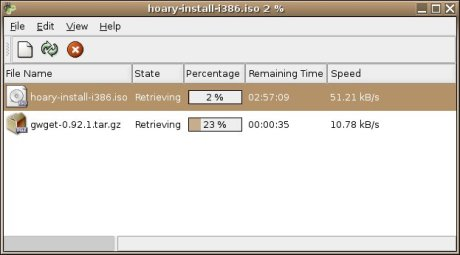

About Gwget
Gwget it's a download manager for the Gnome Desktop. The main features are:
- Resume: By default, gwget tries to continue any download.
- Notification: Gwget tries to use the Gnome notification area support, if available. You can close the main window and gwget runs in the background.
- Recursivity: Gwget detects when you put a html, php, asp or a web page dir in the url to download, and ask you to only download certain files (multimedia, only the index, and so on).
- Drag & Drop: You can d&d a url to the main gwget window or the notification area icon to add a new download.
Lastest News
5 January 2006. Gwget 0.97 Released.Download: [ tgz ] [ bz2 ]
Features:
- Support for Epiphany 1.9 (Joseph Sacco)
- Support for autenticate proxy (Yoandy Rodriguez)
- Update Fireget Firefox extension (Joachim Beckers)
Fixes:
- Correct .desktop to follow the spec
- Set the correct value of limit speed and simultaneus download
Translations:
- Update: sk (Marcel Telka), zh_TW (Abel Cheung), es (Francisco Javier F. Serrador), zh_CN (Funda Wang), cs (Miloslav Trmac), vi (Clytie Siddall), fi (Ilkka Tuohela), eu (Iñaki Larrañaga), nl (Vincent van Adrighem), en_CA (Adam Weinberger), en_GB (Alan Horkan), hu (Gabor Kelemen), ca (Josep Puigdemont i Casamajó)
- New: it (Marco Giorgetti), ne (Pawan Chitrakar), ar (Fahad Aljoaid)

|
|

{kind=link}